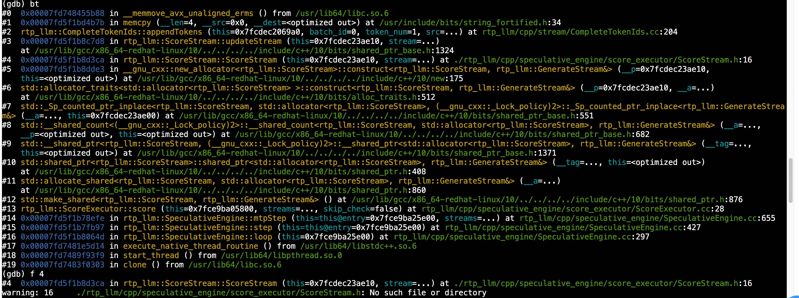

RTP-LLM调试#
RTP-LLM项目使用Bazel构建系统。在了解如何从头开始本地编译和运行RTP-LLM之后，本文将介绍如何调试代码。由于RTP-LLM主要由Python和C++代码组合而成，我们将在本指南中介绍几种常用的调试方法。
调试Python部分#
方法一：日志或打印#
在本地运行调试模式时，将rtp_llm/config/py_config_modules.py中ServerConfig类的self.frontend_server_count = 4修改为1。这个修改确保只启动一个前端服务器，允许打印语句和日志输出直接在终端中显示。
方法二：Python调试器#
假设我们已经有一个现有的容器，访问它并设置SSH端口映射以启用远程连接。
sudo ssh-keygen -A
sudo /usr/sbin/sshd -p 37228
通过VS Code中的SSH扩展访问容器。
Host dev-container
HostName ip
User user
Port 37228
通过VS Code访问容器后，确保Python调试器扩展已安装在容器中。
Write the launch.json configuration file for debugging. Here’s an example of a VS Code launch.json configuration file for debugging Python and C++ code in the RTP-LLM project (adjust paths as needed):
{
"version": "0.2.0",
"configurations": [
{
"name": "Run RTP-LLM with Qwen2-0.5B",
"type": "debugpy",
"request": "launch",
"program": "${file}",
"cwd": "${path/to/project}/RTP-LLM/",
"env": {
"PYTHONPATH": "$PYTHONPATH:${path/to/project}/RTP-LLM",
"PYTHON_BIN": "/opt/conda310/bin/python",
"CUDA_VISIBLE_DEVICES": "2,3",
"CHECKPOINT_PATH": "/mnt/nas1/hf/Qwen2-0.5B",
"TOKENIZER_PATH": "/mnt/nas1/hf/Qwen2-0.5B",
"MODEL_TYPE": "qwen_2",
"LD_LIBRARY_PATH": "",
"TP_SIZE": "2",
"DP_SIZE": "1",
"EP_SIZE": "2",
"WORLD_SIZE": "2",
"LOCAL_WORLD_SIZE": "1",
"MAX_SEQ_LEN": "1024",
"MAX_CONTEXT_BATCH_SIZE": "1",
"CONCURRENCY_LIMIT": "8",
"RESERVER_RUNTIME_MEM_MB": "4096",
"WARM_UP": "1",
"START_PORT": "61348",
"NSIGHT_PERF": "0",
"CUDA_ASAN": "0"
},
"args": []
},
],
}
在运行或调试代码之前设置所需的环境变量。
#!/bin/bash
set -x;
## set python path
export PYTHON_BIN=/opt/conda310/bin/python;
## set user home
export USER_HOME=${/path/to/home};
export PYTHONUNBUFFERED=TRUE;
export PYTHONPATH=${path/to/project}/:${PYTHONPATH}
export PY_LOG_PATH=${path/to/project}/logs
export CHECKPOINT_PATH="/mnt/nas1/hf/Qwen2-0.5B";
export TOKENIZER_PATH=${CHECKPOINT_PATH}
export MODEL_TYPE="qwen_2";
export LD_LIBRARY_PATH=/opt/conda310/lib/:/usr/local/nvidia/lib64:/usr/lib64:/usr/local/cuda/lib64:/usr/local/cuda-12.6/extras/CUPTI/lib64/
export TP_SIZE=2
export DP_SIZE=1
export EP_SIZE=$((TP_SIZE * DP_SIZE))
export WORLD_SIZE=$EP_SIZE
export LOCAL_WORLD_SIZE=$EP_SIZE
## request max token number
export MAX_SEQ_LEN=8192
export MAX_CONTEXT_BATCH_SIZE=1
export CONCURRENCY_LIMIT=8
export RESERVER_RUNTIME_MEM_MB=4096
export WARM_UP=1
export START_PORT=61348
export NSIGHT_PERF=0
export CUDA_ASAN=0
export DEVICE_RESERVE_MEMORY_BYTES=-20480000
打开包含start_server.py的文件，设置断点，然后开始调试。

调试C++部分#
方法一：日志记录#
添加以下日志语句进行输出：
RTP_LLM_LOG_DEBUG("request [%ld] enqueue success", request_id);
其他类似函数包括：
RTP_LLM_LOG_INFO
RTP_LLM_LOG_WARNING
RTP_LLM_LOG_ERROR
使用LOG_LEVEL="INFO"环境变量设置日志级别。
方法二：GDB调试#
GDB调试核心#
当代码在容器中崩溃并产生核心转储时，会生成一个核心文件（例如，core-rtp_llm_backend-78933-1757510512）。调试方法：
gdb /opt/conda310/bin/python3 core-rtp_llm_backend-78933-1757510512
将核心文件加载到GDB后，运行bt（回溯）命令显示错误堆栈跟踪。

f 4 # check rtp_llm::ScoreStream::ScoreStream info
info locals
p stream
检查propose_stream_信息
p *(this->propose_stream_._M_ptr->sp_output_buffer_._M_ptr->tokens._M_ptr)
检查token信息
检测到空指针（data_ = 0），导致memcpy错误。
GDB调试进程#
MODEL_TYPE=qwen_7b \
CHECKPOINT_PATH=/mnt/nas1/hf/Qwen-7B-Chat/ \
TOKENIZER_PATH=/mnt/nas1/dm/qwen_sp/qwen_tokenizer \
TP_SIZE=1 \
SP_TYPE=vanilla \
GEN_NUM_PER_CIRCLE=5 \
SP_MODEL_TYPE=qwen_1b8 \
SP_CHECKPOINT_PATH=/mnt/nas1/hf/qwen_1b8_sft/ \
WARM_UP=1 \
INT8_MODE=1 \
SP_INT8_MODE=1 \
REUSE_CACHE=1 \
START_PORT=26666 \
/opt/conda310/bin/python3 -m rtp_llm.start_server
启动服务后，您可以按如下方式查看相关进程：
rtp_llm_backend_server进程将作为推理服务的主进程运行。如果设置了TP_SIZE=2，您将看到两个子进程（例如，rank-0和rank-1）用于张量并行。rtp_llm_frontend_server_0前端服务进程将处于活动状态以处理外部请求。
yanxi.w+ 40954 40801 44 14:03 pts/8 00:00:41 rtp_llm_backend_server
yanxi.w+ 41356 40801 20 14:04 pts/8 00:00:11 rtp_llm_frontend_server_0
开始GDB调试：将GDB附加到目标进程（例如，PID 40954）：
gdb -p 40954
在代码中设置断点，使用curl发送测试请求并触发断点：
curl -X POST http://127.0.0.1:26000/v1/chat/completions -H "Content-Type: application/json" -d '{
"messages": [
{
"role": "user",
"content": "What's the WEATHER like in Hangzhou?"
}
],
"stream": false,
"aux_info": true,
"max_tokens": 10
}'
断点将被触发，然后通过检查堆栈跟踪来检查代码路径。
方法三：单元测试#
示例：ViT模块的单元测试
ViT模块的文件结构
创建单元测试的步骤 创建测试文件：
在测试目录下添加一个.cc测试文件（例如，multimodal_processor_test.cc）。使用EXPECT_EQ等断言语句编写Google Test（gtest）用例来验证行为。
#include <gtest/gtest.h>
TEST(MultimodalProcessorTest, BasicFunctionality) {
// Test logic here
EXPECT_EQ(result, expected_value);
}
定义BUILD文件：
cc_test(
name = "multimodal_processor_test",
srcs = ["multimodal_processor_test.cc"],
deps = [
"//rtp_llm/cpp/multimodal_processor:main_lib",
"@gtest//:gtest_main",
],
)
Run the Test: Execute the following command in the project’s container:
bazelisk test rtp_llm/cpp/multimodal_processor/test:multimodal_processor_test --jobs=48 --test_output=streamed --config=cuda12_6
Debug Running Server#
要通过curl请求获取调试信息，请使用以下带有详细输出的命令：
在请求中启用aux_info: true和debug_info: true将返回额外的辅助信息和调试详细信息。
curl -X POST http://127.0.0.1:26000/v1/chat/completions -H "Content-Type: application/json" -d '{
"messages": [
{
"role": "user",
"content": "What's the WEATHER like in Hangzhou?"
}
],
"stream": false,
"aux_info": true,
"max_tokens": 10,
"debug_info": true
}'
响应：
{
"id": "chat-",
"object": "chat.completion",
"created": 1757660643,
"model": "",
"choices": [
{
"index": 0,
"message": {
"role": "assistant",
"content": "The weather in Hangzhou is usually wetter in spring and autumn",
"partial": false
},
"finish_reason": "length"
}
],
"usage": {
"prompt_tokens": 34,
"total_tokens": 44,
"completion_tokens": 10
},
"debug_info": {
"input_prompt": "<|im_start|>system\nYou are Qwen, created by Alibaba Cloud. You are a helpful assistant.<|im_end|>\n<|im_start|>user\nWhat's the WEATHER like in Hangzhou?<|im_end|>\n<|im_start|>assistant\n",
"input_ids": [
151644, 8948, 198, 2610, 525, 1207, 16948, 11, 3465, 553, 54364, 14817, 13,
1446, 525, 264, 10950, 17847, 13, 151645, 198, 151644, 872, 198, 104130,
9370, 104307, 104472, 11319, 151645, 198, 151644, 77091, 198
],
"input_urls": [],
"tokenizer_info": "Qwen2TokenizerFast(...完整tokenizer信息...)",
"max_seq_len": 16384,
"eos_token_id": 151645,
"stop_word_ids_list": [[151645], [151644], [37763, 367, 25], [151643]],
"stop_words_list": ["<|im_end|>", "<|im_start|>", "Observation:", "<|endoftext|>"],
"renderer_info": {
"class_name": "QwenRenderer",
"renderer_model_type": "qwen_2",
"extra_stop_word_ids_list": [[37763, 367, 25], [151643]],
"extra_stop_words_list": ["Observation:", "<|endoftext|>"],
"template": "...(Complete template content)..."
}
},
"generate_config": {
"max_new_tokens": 10,
"max_input_tokens": 32000,
"max_thinking_tokens": 32000,
"in_think_mode": false,
"end_think_token_ids": [],
"num_beams": 1,
"variable_num_beams": [],
"do_sample": true,
"num_return_sequences": 0,
"top_k": 0,
"top_p": 1.0,
"temperature": 0.7,
"repetition_penalty": 1.0,
"presence_penalty": 0.0,
"frequency_penalty": 0.0,
"min_new_tokens": 0,
"stop_words_str": ["<|im_end|>", "<|im_start|>", "Observation:", "<|endoftext|>"],
"stop_words_list": [[151645], [151644], [37763, 367, 25], [151643], [151645], [151644]],
"using_hf_sampling": false,
"print_stop_words": false,
"timeout_ms": 3600000,
"ttft_timeout_ms": -1,
"traffic_reject_priority": 100,
"request_format": "raw",
"calculate_loss": 0,
"return_logits": false,
"return_incremental": false,
"return_hidden_states": false,
"hidden_states_cut_dim": 0,
"normalized_hidden_states": false,
"select_tokens_str": [],
"select_tokens_id": [],
"return_input_ids": false,
"return_output_ids": false,
"md5_value": "",
"custom_prop": "{}",
"sp_advice_prompt": "",
"sp_advice_prompt_token_ids": [],
"sp_edit": false,
"force_disable_sp_run": false,
"force_sp_accept": false,
"return_cum_log_probs": false,
"return_all_probs": false,
"return_softmax_probs": false,
"can_use_pd_separation": true,
"gen_timeline": false,
"profile_step": 3,
"out_prefix": "",
"role_addrs": [],
"inter_request_id": -1,
"ignore_eos": false,
"skip_special_tokens": false,
"is_streaming": false,
"add_vision_id": true,
"tool_call_message_extract_strategy": "default",
"global_request_id": -1,
"reuse_cache": true,
"enable_3fs": true
},
"aux_info": {
"cost_time": 95.082,
"iter_count": 10,
"prefix_len": 0,
"input_len": 34,
"reuse_len": 0,
"output_len": 10,
"step_output_len": 10,
"fallback_tokens": 0,
"fallback_times": 0,
"first_token_cost_time": 16.947,
"wait_time": 0.058,
"pd_sep": false,
"cum_log_probs": [],
"beam_responses": [],
"softmax_probs": [],
"local_reuse_len": 0,
"remote_reuse_len": 0
}
}
在请求中启用return_softmax_probs: true将返回softmax概率详细信息。"
curl -X POST http://127.0.0.1:26000/v1/chat/completions -H "Content-Type: application/json" -d '{
"messages": [
{
"role": "user",
"content": "What's the WEATHER like in Hangzhou?"
}
],
"stream": false,
"aux_info": true,
"max_tokens": 10,
"extra_configs": {
"return_softmax_probs": true
}
}'
响应：
{
"id": "chat-",
"object": "chat.completion",
"created": 1757661676,
"model": "",
"choices": [
{
"index": 0,
"message": {
"role": "assistant",
"content": "The weather in Hangzhou varies from season to season. Spring warmth",
"partial": false
},
"finish_reason": "length"
}
],
"usage": {
"prompt_tokens": 34,
"total_tokens": 44,
"completion_tokens": 10
},
"aux_info": {
"cost_time": 95.985,
"iter_count": 10,
"prefix_len": 0,
"input_len": 34,
"reuse_len": 0,
"output_len": 10,
"step_output_len": 10,
"fallback_tokens": 0,
"fallback_times": 0,
"first_token_cost_time": 16.835,
"wait_time": 0.061,
"pd_sep": false,
"cum_log_probs": [],
"beam_responses": [],
"softmax_probs": [
0.5396254658699036,
0.46262434124946594,
0.9233724474906921,
0.01102062501013279,
0.9563982486724854,
0.7596278190612793,
0.9906871914863586,
0.5212739706039429,
0.27689263224601746,
0.21558642387390137
],
"local_reuse_len": 0,
"remote_reuse_len": 0
}
}
还有其他配置选项可用，例如：
返回logits
返回累积对数概率
返回增量
返回隐藏状态
返回输出ID
返回输入ID
返回所有概率